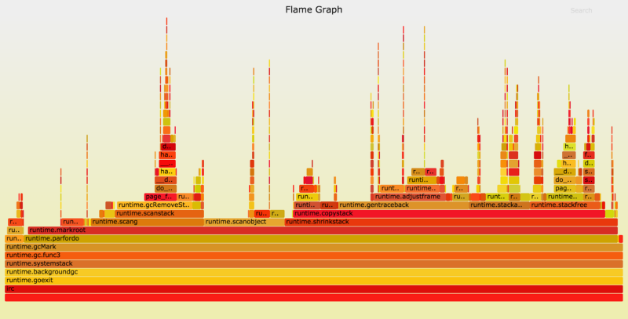
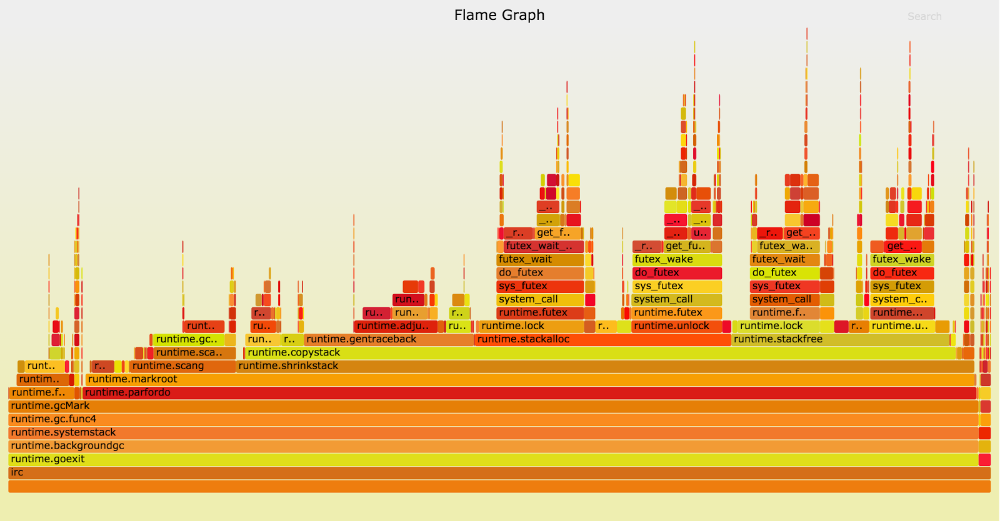
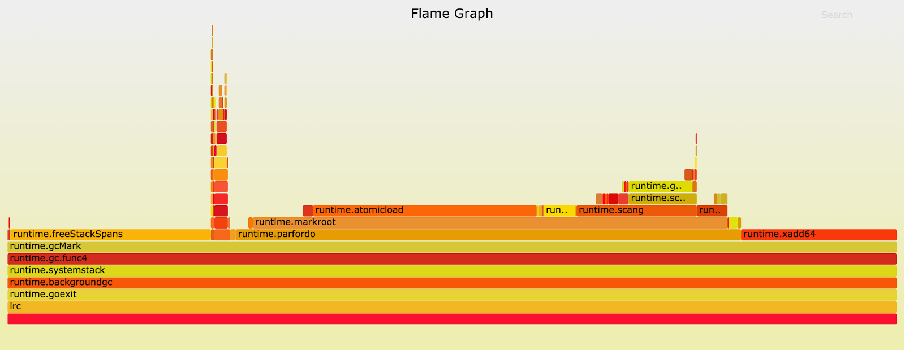

这是Twitch的Rhys Hiltner写的一篇关于Go垃圾回收监控的优秀文章，我前几天在reddit看到后就想翻译它。这几天也看到飞花无缺已经把它翻译整理了：为Go语言GC正名－2秒到1毫秒的演变史，所以我就不翻译了，因为这篇文章被墙了，我就把原文转帖在这里。
这篇文章有几个值得我们学习的地方。一是提供了Go各个版本在产品级大并发情况(50万并发用户)的垃圾回收器的改进效果，二是对Go的垃圾回收的监控分析手段，主要通过Brendan Gregg’s tools火炬图这个工具分析方法的耗时。

以下是文章原文。
We use Go at Twitch for many of our busiest systems. Its simplicity, safety, performance, and readability make it a good tool for the problems we encounter with serving live video and chat to our millions of users.
But this isn’t another article about how great Go is for us — it’s about how our use of Go pushes the limits of the current runtime implementation in some dimensions, and how we respond to reaching those limits.
It’s the story of how improvements to the Go runtime between Go 1.4 and Go 1.6 gave us a 20x improvement in garbage collection (GC) pause time, of how we’ve gotten another 10x improvement in Go 1.6’s pauses, and of how sharing our experience with the Go runtime team helped them give us an additional 10x speedup in Go 1.7 while obsoleting our manual tuning.
The GC latency saga begins
Our IRC-based chat system was first written in Go in late 2013, replacing the previous Python implementation. Using pre-release versions of Go 1.2, it was able to serve over 500,000 concurrent users from each physical host without special tuning. With a group of three goroutines (Go’s lightweight threads of execution) serving each connection, the program chugged along with 1,500,000 goroutines per process. Even with such a large goroutine count, the only major performance issue we encountered with Go circa 1.2 was the GC pause time, which would freeze our application for tens of seconds whenever it ran — not something we could accept for our interactive chat service.
Not only was each GC pause very expensive, the collections ran several times a minute. We worked hard to reduce the number and size of memory allocations so the GC would run less frequently, declaring victory once the heap grew only around 50% every two minutes. Although there were fewer pauses, each one was just as devastating.
Once Go 1.2 was released, GC pause time was down to “only” a few seconds. We split our traffic across a larger number of processes, which brought the pauses down to a more comfortable range.
The work to reduce allocations continues to benefit our chat server even as the Go implementation evolves, but the change to split chat traffic across a larger number of processes is a workaround for a particular range of Go versions. Workarounds like that don’t stand the test of time, but are important for providing a good service to our users today. Sharing our experience with the workarounds can help to create lasting improvements to the Go runtime that benefit more than a single program.
Starting with Go 1.5 in August of 2015, Go’s garbage collector is mostly-concurrent and incremental, meaning that it no longer requires the application to be entirely stopped while it does the bulk of its work. Aside from relatively short setup and termination phases, our program can continue to operate while garbage collection is underway. Upgrading to Go 1.5 immediately led to a 10x improvement in the length of GC pauses in our chat system, with pause time on a heavily-loaded test instance shrinking from 2 seconds to around 200ms.
Go 1.5, a new era of GC
While the latency reduction we got with Go 1.5 was worth celebrating, the best part of the new GC was that it set the stage for further incremental improvements.
Go 1.5’s garbage collector still has the same two major phases — a mark phase where the GC determines which memory allocations are still in use, and a sweep phase where the unused memory is prepared for reuse — but those have each been broken into two subphases. First, the application is paused while the previous sweep phase terminates. Then the concurrent mark phase finds in-use memory while the user code is running. Finally, the application is paused a second time for the mark phase to terminate. Afterwards, the unused memory is gradually swept while the application goes about its business.
The runtime’s gctrace feature prints lines summarizing each GC cycle, including the duration of each phase. For our chat server it indicates that most of the remaining pause time is in the mark termination phase, so the analysis will focus there. And since the runtime team has requested bug reports describing apps that still see long GC pauses, we’d be remiss to keep our long pause times a secret!
Of course, we’d need more detail on what exactly the GC was up to during those pauses. The Go core packages include a great user-level CPU profiler, but for this we’re going to use Linux’s perf tool. Using perf will allow a higher sample frequency and visibility into time spent in the kernel. Monitoring cycles spent in the kernel can help us debug slow syscalls and work done transparently for virtual memory management.
The image below is part of a profile of our chat server running with go1.5.1. This is a Flame Graph made with Brendan Gregg’s tools, trimmed to only include samples that have the runtime.gcMark function on the stack, which for Go 1.5 approximates time spent in the mark termination phase.

The flame graph shows stack depth as upwards growth, and represents CPU time as the width of each section. (The colors are meaningless, and the ordering on the x-axis is also insignificant — it’s just alphabetical.) At the very left of the chart we can see that runtime.gcMark is calling runtime.parfordo in nearly all of the sampled stacks. Moving upwards, we see that most time is spent in runtime.markroot making calls to runtime.scang, runtime.scanobject, and runtime.shrinkstack.
The runtime.scang function is for re-scanning memory to aid in terminating the mark phase. The whole idea behind the mark termination phase is to finish scanning the app’s memory, so this is the right type of work for it to be doing here. We’ll have better luck finding performance improvements in the other functions.
Next up is runtime.scanobject. That function does several things, but the reason it’s running during the chat server’s mark termination phase in Go 1.5 is to implement finalizers. “Why would the program use so many finalizers that they’d make a significant contribution to GC pause times?” you might wonder. The application in question is a chat server, handling hundreds of thousands of users. Go’s core “net” package attaches a finalizer to every TCP connection to help control file descriptor leaks — and since each user has their own TCP connection, even small contributions to mark termination add up.
That seemed worth reporting to the Go runtime team. We emailed back and forth and the Go team was very helpful with suggestions on how to diagnose the performance problems and how to distill them into minimal test cases. For Go 1.6, the runtime team moved finalizer scanning into the concurrent mark phase, leading to smaller pauses for apps with a large number of TCP connections. Together with all of the other improvements in the release, pause times for our chat server with Go 1.6 are half of what they were with Go 1.5, down to around 100ms on a test instance. Progress!
Stack shrinking
Go’s approach to concurrency involves making it very cheap to have a large number of goroutines. While a program using 10,000 OS threads might perform poorly, that number of goroutines is nothing unusual. One difference is that a goroutine starts with a very small stack — only 2kB — which grows as needed, contrasted with the large fixed-size stacks that are common elsewhere. Go’s function call preamble makes sure there’s enough stack space for the next call, and if not will move the goroutine’s stack to a larger memory area — rewriting pointers as needed — before allowing the call to continue.
Thus as a program runs, its goroutines’ stacks will grow to support the deepest calls they make. One of the responsibilities of the garbage collector is to reclaim stack memory that’s no longer required. The task of moving goroutine stacks onto more appropriately-sized memory ranges is done by runtime.shrinkstack, which in Go 1.5 and 1.6 is done during mark termination while the app is paused.

The above flame graph — recorded with a pre-1.6 version of Go from October 2015 — shows runtime.shrinkstack in around 3/4ths of its samples. If that work could be done while the app is running, it could give a big speedup to our chat server and other programs like it.
The Go runtime’s package docs explain how to disable stack shrinking. For our chat server, wasting some memory is a small price to pay for reduced GC pauses — and this is the decision we have when running Go 1.6. With stack shrinking disabled, the chat server’s pause times are cut in half again to somewhere between 30 and 70ms depending on which way the wind is blowing.
While keeping the structure and operations of the chat service relatively constant, we’d endured the multi-second GC pauses of Go 1.2 through 1.4. Go 1.5 brought them down to around 200ms, and Go 1.6 cut it further to around 100ms. Now with pauses generally less than 70ms, we can claim an improvement of more than 30x.
There’s probably still room for improvement; time for another profile!
Page faults?!
The GC pause times had been fairly consistent until this point, but now they are spread out over a wide range of durations (from 30 to 70ms), uncorrelated with any other gctrace output. Here’s a flame graph of cycles spent during some of the longer mark termination pauses:
When the Go GC calls runtime.gcRemoveStackBarriers the system generates a page fault, leading to a call to the kernel’s page_fault function, leading to the wide tower in the chart just right of center. Page faults are the kernel’s way of mapping a page of virtual memory (often 4kB) to a piece of physical RAM. Processes are often allowed to allocate huge amounts of virtual memory, which will be converted to resident memory through page faults only as it’s accessed by the program.
The runtime.gcRemoveStackBarriers function modifies stack memory, which should have been accessed recently by the program. In fact, its purpose is to remove stack barriers that were added at the beginning of the GC cycle just seconds earlier. The system has plenty of memory available — it didn’t assign the physical RAM to some other more active process — so why would this memory access lead to page faults?
Some background on our computing hardware might be helpful. The servers we use to run the chat system are modern dual-socket machines. Each CPU socket has a few directly-attached memory banks. This configuration results in NUMA, Non-Uniform Memory Access. When a thread runs on a core in socket 0, it will have faster access to the physical memory attached to that socket and moderately slower access to other memory. The Linux kernel tries to reduce this latency by running threads near the memory they use, and by moving physical memory pages to be close to where the relevant threads run.
With this in mind, we can take a closer look at the behavior of the kernel’s page_fault function. Looking deeper into the call stack (moving upwards on the flame graph) we can see the kernel calling do_numa_page and migrate_misplaced_page, indicating that the kernel is moving the program’s memory between physical memory banks.
The Linux kernel has picked up on the nearly-meaningless memory access patterns of the GC’s mark termination phase and is migrating memory pages — at great expense — to match it. This behavior shows up ever so slightly in the go1.5.1 flame graph, but it’s much more pronounced now that our attention is focused on runtime.gcRemoveStackBarriers.
This is where the benefit of profiling with perf is most apparent. The perf tool is able to show kernel stacks, while Go’s user-level profiler would have shown the Go function as mysteriously slow. Using perf is rather more complicated, requires root access for viewing kernel stacks, and for Go 1.5 and 1.6 requires a nonstandard build of the Go toolchain (via GOEXPERIMENT=framepointer ./make.bash, to be standard in Go 1.7). For problems like this one, it’s entirely worth it.
Controlling the migrations
If using two CPU sockets and two memory banks is too complex, let’s try using just one. The bluntest instrument available for this is the taskset command, which can restrict a program to run only on cores on a single socket. Since the program’s threads only access memory from one socket, the kernel will move its memory to reside in that socket’s memory banks.

After confining the program to a single NUMA node the app’s mark termination times went down to 10–15ms, a remarkable improvement from the 200ms seen with Go 1.5 or the 2-second pauses of Go 1.4. (The same benefit can be had without sacrificing half of the server by setting the memory policy of the process to MPOL_BIND via set_mempolicy(2) or mbind(2).) The above profile was taken with a pre-1.6 version of Go from October 2015. It shows considerable time in runtime.freeStackSpans on the left, which has since been moved to a concurrent GC phase and so no longer contributes to pause duration. There’s not much left in the mark termination phase to remove!
Go 1.7
Up through Go 1.6, we managed the high cost of stack shrinking by disabling the feature for our program. That had a minimal impact on the chat server’s memory usage, but levied a much larger toll on operational complexity. Stack shrinking is very important for some programs, so instead of rolling the change out everywhere we only implemented it for a small set of applications. Go 1.7 now shrinks stacks concurrently while the application is running. We get the best of both worlds — low memory usage without any special tuning.
Since the introduction of its concurrent GC in Go 1.5, the runtime has kept track of whether a goroutine has executed since its stack was last scanned. The mark termination phase would check each goroutine to see whether it had recently run, and would rescan the few that had. In Go 1.7, the runtime maintains a separate short list of such goroutines. This removes the need to look through the entire list of goroutines while user code is paused, and greatly reduces the number of memory accesses that can trigger the kernel’s NUMA-related memory migration code.
Finally, the compilers for the amd64 architecture will maintain frame pointers by default, so standard debugging and performance tools like perf can determine the current function call stack. Users who build their programs with binary distributions of Go will be able pick up more advanced tools as they need them without having to dig into how to rebuild their Go toolchain and rebuild/redeploy their programs. This bodes well for future performance improvements to the Go core packages and runtime, as engineers like you and I will be able to collect the information we need for high-quality bug reports.
With pre-release Go 1.7 from June 2016, the GC pause times are better than ever with no manual tuning required. Typical pause times for our chat server are close to 1ms out of the box — a 10x improvement over the tuned Go 1.6 configuration!
Sharing our experiences with the Go team allowed them to find permanent solutions to the problems we’d encountered. Profiling and tuning gave our application a 10x improvement in pause time with Go 1.5 and 1.6, but between Go 1.5 and Go 1.7 the runtime team was able to turn that into a 100x improvement in pause time for all apps like ours. Hats off to their tireless work on Go’s runtime performance.
What’s next
All of this analysis has focused on our chat server’s bane — stop-the-world pause duration — but that’s only one dimension of GC performance. With the GC’s awkward pauses finally under control, the runtime team is poised to tackle throughput.
Their recent proposal for a Transaction Oriented Collector describes an approach to transparently provide inexpensive allocation and collection of memory that isn’t shared between goroutines. This can delay the need for a full GC run, and reduce the total number of CPU cycles that the program spends on garbage collection.
And of course, Twitch is hiring! If this sort of stuff interests you, drop us a line.
Thank you
I’d like to thank Chris Carroll and John Rizzo for their help with safely testing new Go versions on their chat system, and Spencer Nelson and Mike Ossareh for editing this post with me. I’d also like to thank the Go runtime team for helping me to file good bug reports and for their constant improvements to Go’s garbage collector.